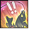
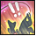

Step 4
This part of the questline will have you catching 80 Allagan Hunter, which you will again turn into to the same npc as last time for Highly Vicious Figher's Gobbiegoo
This parts where the quest starts to get slightly harder. The fish will become a bit more rare. You'll go to Azys La, going far to the northeast to a lake near a small forest.
For this part you NEED to use patience  and only use powerful hookset  when seeing three exclamation points above your head. Once again it is recommended to bring hi-cordials
and only use powerful hookset  when seeing three exclamation points above your head. Once again it is recommended to bring hi-cordials  or else you will be here for a very long time.
This part may take a while so you should keep yourself occupied while you wait for GP to refresh and your hi-cordial is on cooldown!
or else you will be here for a very long time.
This part may take a while so you should keep yourself occupied while you wait for GP to refresh and your hi-cordial is on cooldown!